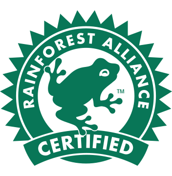

Marcos Cézar Miaki
Fundador e gestor. Começou na cafeicultura ao lado do pai, José Miaki.
Tradição, orgulho e amor pelo café que se renovam a cada geração. É assim que a família Miaki descreve a própria relação com a cafeicultura.
Empresa familiar · Patrocínio, MG

A relação da família Miaki com o café veio do Japão para o Paraná e, no fim da década de 70, mudou-se para Patrocínio, no Cerrado Mineiro. Foi ali que Marcos Cézar Miaki descobriu, ao lado do pai, José Miaki, a vocação e a paixão por produzir café.
Em 2000, Marcos Cézar e a esposa, Brasemir, estruturaram a MC Miaki Coffee, que se expandiu nos anos seguintes até reunir seis núcleos produtores e somar 2.665 hectares de café.
É uma história de dedicação baseada em pesquisa, rigor técnico e tecnologia moderna. Ela faz da MC Miaki uma potência na produção de cafés especiais e sustentáveis, premiada e reconhecida pelo profissionalismo, pela melhoria contínua e pela consistência nas entregas.
Uma empresa verdadeiramente familiar, que preza a própria história, se orgulha da tradição e, ao mesmo tempo, olha para o futuro e inova sempre.
Um trabalho apoiado em sólida experiência de campo e consultorias especializadas, que aperfeiçoa variedades, métodos de cultivo e o pós-colheita para produzir com mais eficiência e sempre com qualidade.
Fundador e gestor. Começou na cafeicultura ao lado do pai, José Miaki.
Cofundadora e gestora da MC Miaki Coffee desde 2000.
Segunda geração, no dia a dia rural e empresarial do negócio.
Segunda geração, no dia a dia rural e empresarial do negócio.
A alegria de sentir o perfume de uma florada, o olhar atento a cada fruto, a emoção sempre renovada e a satisfação quase sempre incontida ao ver um lote de café produzido.
Uma microrregião com características únicas, a 1.250 metros de altitude, onde está a maior parte das lavouras do grupo.
A região se originou de um vulcão que não eclodiu totalmente. No processo, uma grande quantidade de minerais foi incorporada ao solo.
Com o tempo, surgiu uma lagoa no centro do vulcão. Os cafezais ocupam a parte interna da cratera, alta e protegida.
Solo rico, altitude e grande amplitude térmica, com dias quentes e noites frias, deixam as cerejas mais doces.
No Chapadão estão Porta do Céu, Recanto e Shalom, entre 1.170 e 1.250 metros. Lajinha, Abadia e Bom Jardim ficam entre 850 e 1.050 metros.
Cafés de acidez pronunciada e, especificamente neste terroir, um leve toque salgado.
Patrocínio faz parte da Região do Cerrado Mineiro, primeira denominação de origem de café do Brasil.
A produção em todas as fazendas é integrada a uma operação intensa em tecnologia e rastreabilidade, com protocolos rígidos de segurança, bem-estar social e cuidado com os recursos naturais.
Vizinhos de cafezal
Reserva legal dentro das propriedades, cercadas de floresta nativa.
Agricultura regenerativa: a braquiária das entrelinhas volta para perto dos pés depois da roçada.
Irrigação no momento certo para proteger a safra em anos secos e quentes.
Treinamentos de tratoristas, aplicação de defensivos, caldeira, espaço confinado e trabalho em altura.
Sulcos de plantio abertos com GPS e manejo guiado por análises de solo e folha.
Programas de saúde do solo e compostagem com a casca do próprio café.
Controle de pragas e doenças com uso racional de recursos e mínima interferência.
Coleta seletiva e tratamento dos resíduos da produção e do processamento.
Reservatórios e irrigação planejada para garantir a produtividade com responsabilidade.
Equipe treinada, segura e alinhada às normas, crescendo junto com a empresa.
Os núcleos Abadia, Bom Jardim, Lajinha, Porta do Céu, Recanto e Shalom seguem os padrões de sustentabilidade das principais certificações do café. Delas saem cafés de alta qualidade, produzidos de forma sustentável e totalmente rastreável.

Rainforest AllianceFazendas certificadasCriada para armazenar e preparar os cafés dos núcleos do grupo, a Cafeeira Porta do Céu também terceiriza esses serviços para outros produtores da região.
Falar sobre armazenagem